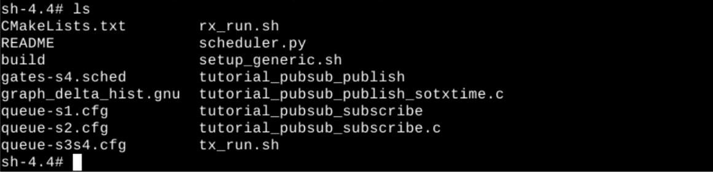
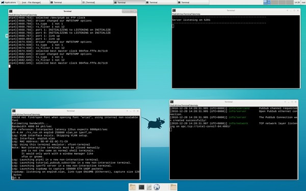
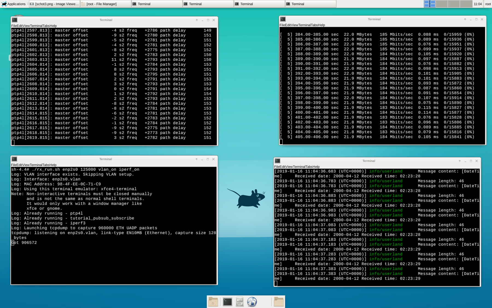
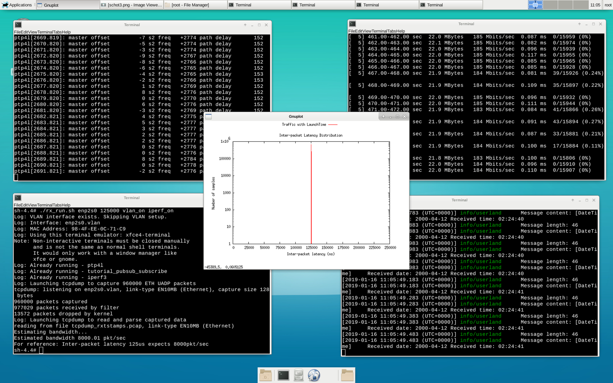
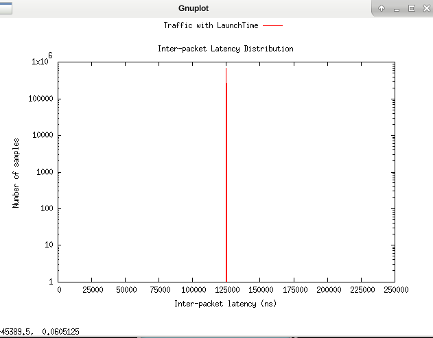

Refer to Demo 3: IEEE 802.1Qbv Time Aware Shaper for a detailed description of the software components of the boards used.
This demonstration has Time-Aware Traffic Scheduling and LaunchTime enabled on a Linux Preempt RT kernel. In addition, sample-app-opcua-pubsub references an OPC UA stack implementation under open-source project Open62541, to demonstrate PubSub communication over Ethernet.
OPC UA (Open Platform Communications Unified Architecture) is a protocol for industrial communication and has been standardized in the IEC 62541 series. As provisioned by the OPC UA standard, the Open62541 project supports two communication models, server-client and publish-subscribe.
This demo uses the publish-subscribe model, where a Publisher periodically publishes a UADP (Unified Architecture Data Payload) packet over Ethernet and a Subscriber receives and decodes the UADP packet.
When implementing TSN in a Linux OS, the concepts of data path and the control path become relevant. The data path encompasses the software layers data traverses through the OS/ kernel/ driver to reach the Ethernet cable. To a user application, this can be as simple as using a socket interface such as SO_TXTIME. The control path encompasses the configuration of those layers based on the TSN parameters. This can be done via tools such as iproute2's TC or ethtool.
This section demonstrates the use of open62541's data path with Linux's socket interfaces to enable a TSN-capable software. Open62541 is not involved in the configuration of TC or ethtool parameters in this reference software.
Refer to Open Platform Communications Unified Architecture (OPC UA) for details about the OPC UA specification and the Open62541 project.
Go to the sample app directory and copy the script into sample-app-opcua-pubsub.
[Board A and B]
$ cd /opt/intel/iotg_tsn_ref_sw/sample-app-opcua-pubsub/
$ cp ../scripts/setup_generic.sh ./
[Board A and B]
Build the publisher (transmit) and subscriber (receive) applications.
[Board A and B]
$ mkdir build/ $ cd build/ $ cmake ../ $ make
Copy the built examples and script into sample-app- opcua-pubsub.
[Board A and B]
$ cp tutorial_pubsub_* ../ $ cd ../ $ ls
The following is a complete sample-app-opcua-pubsub directory:

Set up the static IP address. Board A is set to 169.254.0.1. Your IP address may differ.
[Board A]
./setup_generic.sh -i enp2s0 -b boardA
Set up the static IP address. Board B is set to 169.254.0.2. Your IP address may differ.
[Board B]
./setup_generic.sh -i enp2s0 -b boardB
Use the receive script to set up its VLAN interface, launch tcpdump and the following 3 windows:
- ptp4l
- subscriber
- iperf3 server
These programs are waiting for responses from Board A and may not appear to run yet.
[Board B]
$ ./rx_run.sh enp2s0 125000 vlan_on iperf_on
Where
| Argument | Description |
|---|---|
| enp2s0 | Specify network interface from which to receive packets |
| 125000 | Expected inter-packet latency between received packets. Used for graph plotting. |
| vlan_on | Create and use a VLAN interface |
| iperf_on | Open a terminal and launch iperf3 as server |
After running the command, the windows are stacked on top of each other. Use a mouse to drag them apart.

Use the transmit script to set up its VLAN, set up transmit qdiscs, and launch ptp4l and phc2sys.
This script will pause several times to let the programs initialize themselves. Once the windows are launched, the primary window will execute the publisher. It will take ~60 seconds to reach that point; in the meantime, proceed to Step 8.
[Board A]
$ ./tx_run.sh enp2s0 4 vlan_on
Where
| Argument | Description |
|---|---|
| enp2s0 | Specify network interface from which to receive packets |
| 4 | This script can set 4 different qdisc configurations. Option 4 enables TAPRIO and ETF qdiscs. |
| vlan_on | Set up VLAN interface |
After running the command, the windows are stacked on top of each other. Use a mouse to drag them apart.
[Board A] While Step 7 is running, start a new terminal (Shift-Ctrl-S) and name it iPerf3 Terminal. Run the iperf3 client to Board B's VLAN interface.
[Board A]iperf3 Terminal
$ iperf3 -b 0 -l 1448 -t 600 -u -A 2 -c 169.254.121.222
Where
| Argument | Description |
|---|---|
| -b 0 | Set target bandwidth to unlimited |
| -l 1448 | Specify length in buffers to read or write to 1448 bytes |
| -t 600 | Specify time to run to 600 seconds |
| -u | Stream UDP packets |
| -A 2 | Set CPU affinity to core #2 |
| -c 169.254.121.222 | Run iperf3 in client mode |
Observe the outputs. Board A executes the publisher and continues to send scheduled traffic infinitely until the user presses CTRL+C to terminate. While Board A is publishing, the Board B will look like this:

On Board B, when the target number of packets is received, a graph, showing the inter-packet latency of the scheduled traffic, appears. Then, the script will terminate itself, leaving behind the created windows:

By default on Board B, rx_run.sh will save a copy of the graph in the file plot_snapshot.png.
In this demo, Time-Aware Traffic Scheduling (taprio qdisc) and LaunchTime are enabled. The publisher and subscriber applications are written using OPC UA (open62541) function calls to achieve the same objective as IEEE 802.1Qbv Demo 3 Scenario 3.1 Tighter Inter-Packet Latency with Time-Aware Traffic Scheduling and LaunchTime Enabled. For an overview of network traffic analysis, refer to IEEE 802.1Qbv Demo: Analyze the Results
Board B has two consumers of the published scheduled traffic: subscriber application and tcpdump. The subscriber prints out the data published by Board A, which is a timestamp. Tcpdump collects hardware receive timestamps to plot the inter-packet latency distribution.

As demonstrated by the graphs above, inter-packet latency distribution for scheduled traffic is deterministic. The results are similar to those in IEEE 802.1Qbv Demo 3 Scenario 3.1 Tighter Inter-Packet Latency with Time-Aware Traffic Scheduling and LaunchTime Enabled.
With Preempt-RT support in the Linux kernel, time-related operations in the kernel become more deterministic, particularly in the areas of:
So, Preempt-RT reduces the jitter of process scheduling for real-time applications that send scheduled traffic. In addition, the timeliness in servicing the high-resolution timer used in TAPRIO and ETF qdiscs improves with Preempt-RT support.
This scenario (Scenario 3.2) uses the same configuration as Scenario 3.1, which includes:
This scenario uses the OPC-UA Pub/Sub over TSN to send cyclic traffic that maps to the configured TX windows in TAPRIO qdisc. Only one process instance of the OPC-UA Pub/Sub sample application is executed. The OPC UA stack is based on the open62541 project.
For ease of setup and user interaction, the demo is designed to run in a GUI-based environment. In reality, real-time applications typically run in non GUI-based environments as the graphic and windowing system in the Linux kernel is not designed and optimized for real time. Therefore, this scenario (125 µs inter-packet latency with 500 µs transmit), in a GUI-based environment, experiences a low percentage of packet drops and packets that missed the TX send schedule. This adds slight jitter into inter-packet latency.
Based on experiments and system performance (inter-packet latency, packet drop), we foresee approaching the limit of software-based IEEE802.1Qbv taprio qdisc. Therefore, additional reductions will require other approaches, such as, using XDP Zero-Copy technology in network driver and Intel® Time Coordinated Computing (Intel® TCC) technology.
Refer to Open Platform Communications Unified Architecture (OPC UA) for details about the OPC UA Specification and the Open62541 Project.
The daemons/ programs are not perfect. As a user, you may need to verify set up. Here are some suggestions: